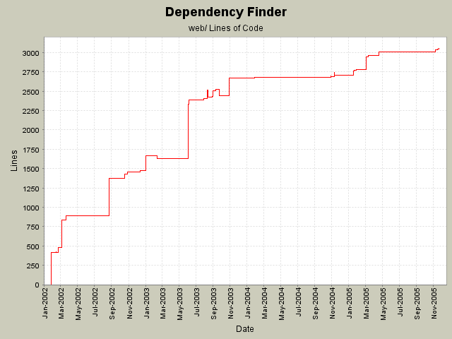

Summary Period: 2002-01-28 to 2005-11-19
[root]/web
 WEB-INF
(1 files, 91 lines)
WEB-INF
(1 files, 91 lines)
 images
(1 files, 0 lines)
images
(1 files, 0 lines)

Total Lines Of Code:
3051 (2006-01-04 08:56)
| Author | Changes | Lines of Code | Lines per Change |
|---|---|---|---|
| jeantessier | 256 (100.0%) | 6951 (100.0%) | 27.1 |
Clean up JSPs
6 lines of code changed in:
Clean up web app
35 lines of code changed in:
Make hyperlinks in graph output less conspicuous
14 lines of code changed in:
Merge redesign for published API JarJarDiff
27 lines of code changed in:
Changed form method from POST to GET so users can bookmark queries
6 lines of code changed in:
Use different start time and durations between extract, update, and load
60 lines of code changed in:
Rename "delta" to "duration" for how long it took to generate the graph.
16 lines of code changed in:
Use only spaces for indentation
14 lines of code changed in:
Use only spaces for indentation
790 lines of code changed in:
favicon.ico using a GIF file
9 lines of code changed in:
Reset graph in web app
16 lines of code changed in:
Clean up spaces
15 lines of code changed in:
New controls using <FIELDSET> tags and TITLE attributes
745 lines of code changed in:
Reset Monitor
2 lines of code changed in:
Use Monitor to better handle reloads
24 lines of code changed in:
Use ModifiedOnlyDispatcher
3 lines of code changed in:
Added flags to display "source" and "file" parameters on extract.jsp and load.jsp respectively
62 lines of code changed in:
Update copyright notice to 2005
10 lines of code changed in:
Better UI for the summarization that follows the closure computation
44 lines of code changed in:
New UI to account for duality between closure and subsequent summarization
100 lines of code changed in:
(50 more)
Generated by StatCVS 0.2.2